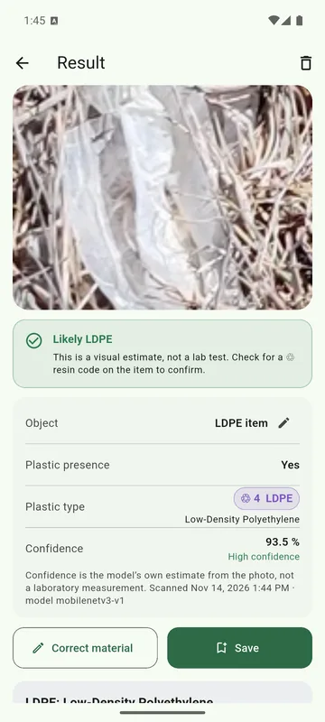

Offline AI
The model runs entirely on the device. No upload is needed to identify an item, and it works in airplane mode.
Free Android app · works offline
Point your camera at a bottle, tub or bag. PlasticLens estimates the plastic type in under a second, right on your phone, and tells you how to dispose of it properly.

Take a photo of one item, or pick one from your gallery. Good light and a plain background help.
A neural network on your phone estimates the plastic type and how confident it is, and tells you when it isn't sure.
See what the material is, where it's used and how to dispose of it. Then save it to your collection.
The model runs entirely on the device. No upload is needed to identify an item, and it works in airplane mode.
Every result shows a calibrated confidence. Unclear photos say “Unable to identify reliably” instead of guessing.
Properties, everyday uses, recycling tips and an eco tip for each of the six common plastics.
Correct a result using the ♲ number on the item. Your corrections help improve the model.
Find all six polymer types, keep a streak going and unlock badges. Points only come from reliable scans.
Use it without an account, or sign in to sync. Photos are backed up only if you turn that on.
The resin identification code tells you what an item is made of. It does not tell you whether your local scheme accepts it.
Polyethylene terephthalate
Drinks bottles, food jars, clear punnetsHigh-density polyethylene
Milk jugs, detergent and shampoo bottlesPolyvinyl chloride
Pipes, window frames, blister packsLow-density polyethylene
Carrier bags, films, squeeze bottlesPolypropylene
Yoghurt tubs, takeaway boxes, capsPolystyrene
Foam cups and trays, disposable cutlery~400 Mt
9 %
~11 Mt
Sorting correctly keeps recyclable material clean and valuable, and keeps the rest out of rivers and seas. Knowing what an item is made of is the first step.
Free, no ads. Android 7.0 or newer.
Installing an APK may need “Install unknown apps” turned on for your browser. Not yet available on Google Play.
PlasticLens gives a visual estimate, not a laboratory analysis. Always check the resin code on the item and your local recycling rules.